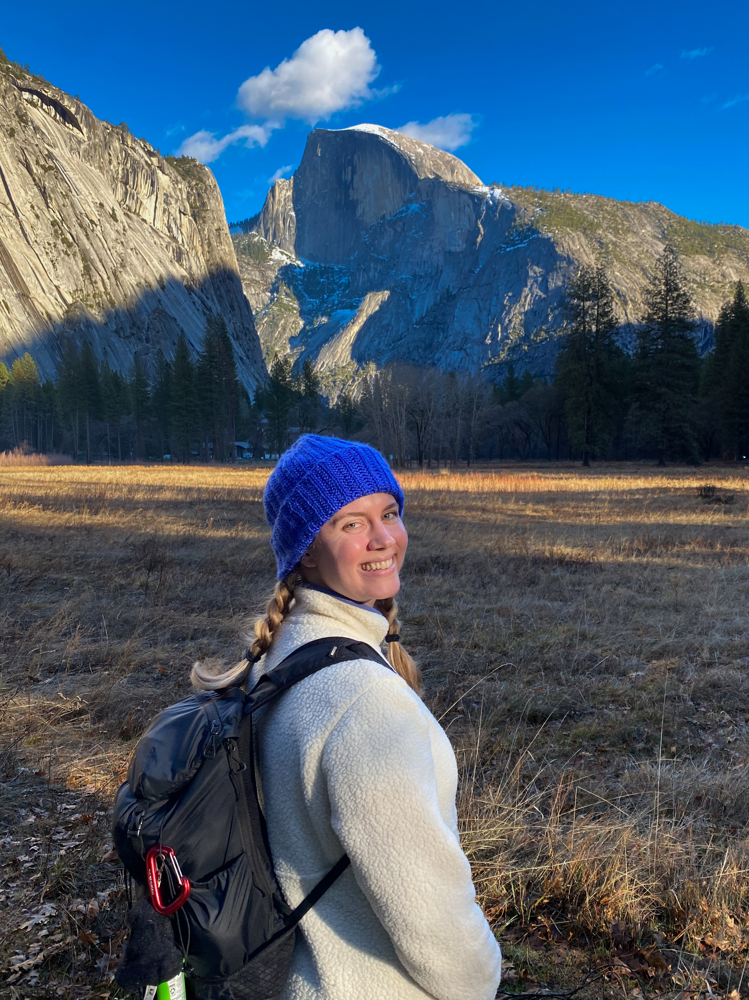
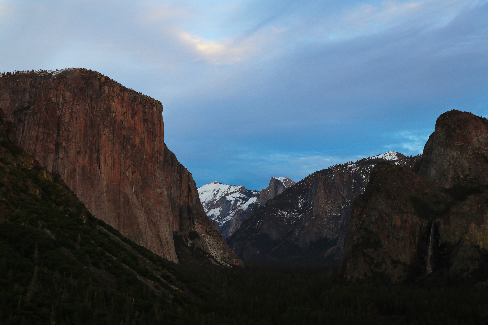
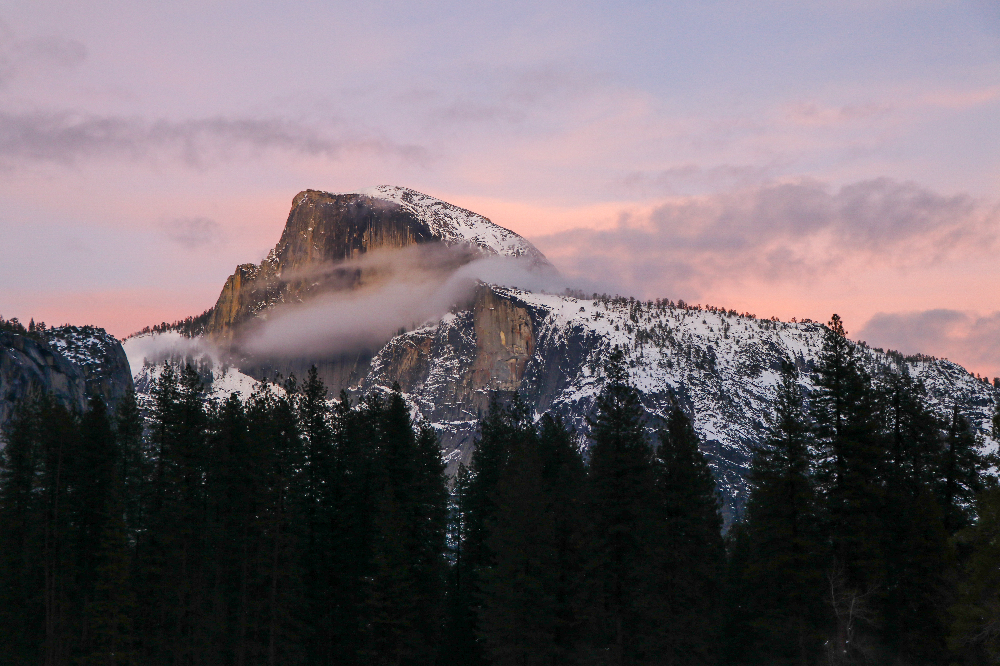
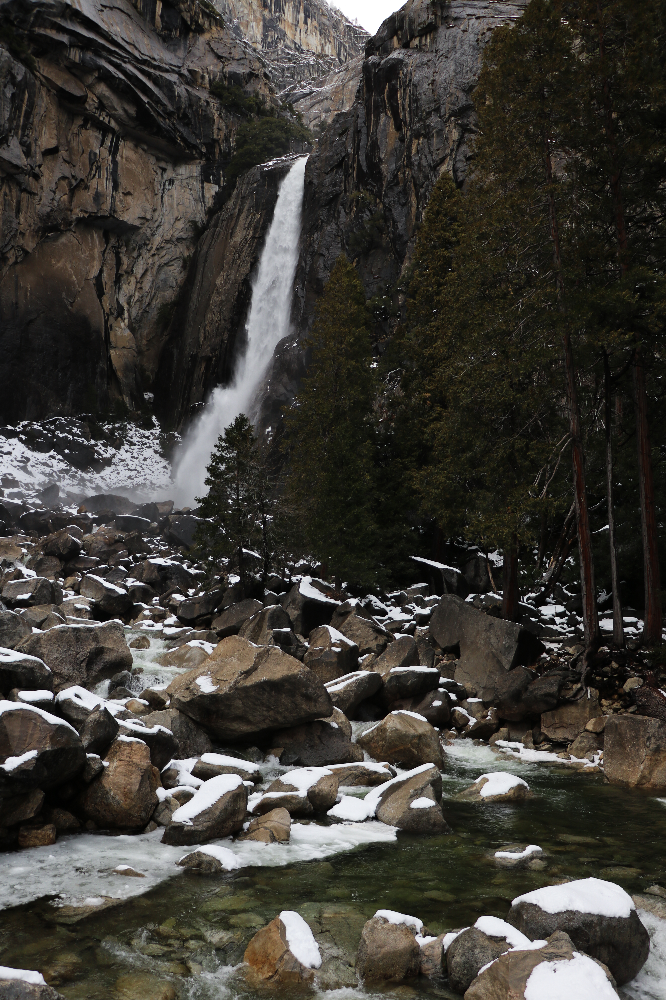

ABOUT THIS PAGE
This page showcases some of my favorite photos I've taken in Yosemite National Park. It also features a map with buttons to navigate to each of the locations where I took these photos.
Use this page to plan your own visit to the park!

ABOUT ME
My name is Julia, and I'm a graduate student studying GIST in the Spatial Sciences Institute at USC. I made this page as part of my Web & Mobile GIS class to combine my interests in photography, traveling, and GIS. I hope you enjoy it!
YOSEMITE PHOTOS
Tunnel View

Cook's Meadow

Cook's Meadow is a beautiful area with great views of Half Dome, featured in this photo.
Lower Yosemite Fall Vista Point

MAP
Click a button to visit the site of each photo.